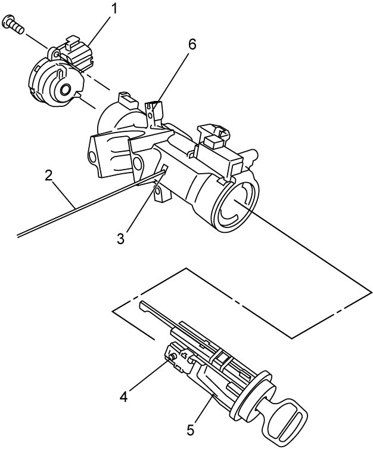

6B
| Steering Lock Disassembly and Reassembly (Ignition Switch Model) |
NOTE:
•Ignition switch and ignition switch cylinder can be replaced without removing steering lock.
•When removing steering lock, refer to Steering Lock Removal and Installation.
•When removing steering lock, refer to Steering Lock Removal and Installation.
Disassembly
1)Remove ignition switch (1). 
2)Turn ignition key to “ACC”, and then push lock button (4) on ignition switch cylinder using a rod (2) of about 2 mm (0.08 in) in diameter inserted through hole (3).
3)Pull out ignition switch cylinder (5) from steering lock (6).


 "Expand image")
Reassembly
Reverse removal procedure noting the following points.
•Turn ignition key to “ACC”, and then insert ignition switch cylinder into steering lock securely.
•If ignition switch cylinder has been replaced, register ignition key transponder code in BCM after completing installation.
•If ignition switch cylinder has been replaced, register ignition key transponder code in BCM after completing installation.